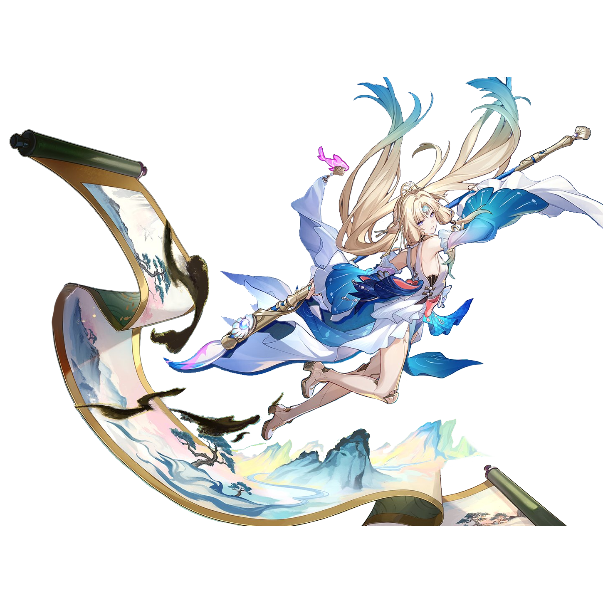

Pearl
Best Pearl build guide for Honkai Star Rail. See Pearl's best Relics, Light Cones, teams, Eidolons, Trace priority, and how to play Pearl.
🔍 Detail Skill
Semua skill aktif dan pasif beserta efeknya.
Deals Ice DMG equal to #1[i]% of Pearl's DEF to one designated enemy.
Deals Ice DMG equal to #1[i]% of Pearl's DEF to all enemies, restores HP for all ally targets equal to #2[i]% of Pearl's DEF plus #3[i], and additionally restores HP for the ally target with the lowest current HP percentage equal to #2[i]% of Pearl's DEF plus #3[i]. When in possession of Certified Banger, additionally deals #4[i]% Ice Elation DMG.
Deals Ice DMG equal to #1[i]% of Pearl's DEF to all enemies, restores HP for all ally targets equal to #2[i]% of Pearl's DEF plus #3[i], and additionally restores HP for the ally target with the lowest current HP percentage equal to #2[i]% of Pearl's DEF plus #3[i].
Gains 15 point(s) of Certified Banger, restores HP for all ally targets equal to #1[i]% of Pearl's DEF plus #2[i], and additionally restores HP for the ally target with the lowest current HP percentage equal to #1[i]% of Pearl's DEF plus #2[i].
Gains 20 point(s) of Certified Banger. Uses Deep Learning on one designated ally character other than this unit, making the target the Aesthetic Archetype. When there are 1/2/3 or more Elation characters on the team, advances the Aesthetic Archetype's action by 10%/15%/30%. nWhen there are 4 or more Elation characters on the team, the Aesthetic Archetype gains 1 extra turn. At the start of this ex
Pearl can use Certified Banger as Repellency. Each point of Certified Banger is equal to 200 point(s) of Repellency. When an ally target takes DMG, Pearl can consume Repellency to block 60% of the DMG for the ally target. Pearl's Certified Banger lasts indefinitely and has a max limit of 50. When an ally target's current HP percentage is 50% or lower, DMG taken is reduced by #1[i]%.
⚔ Light Cone Terbaik
Diurutkan dari yang paling kuat. Persentase menunjukkan performa relatif terhadap pilihan terbaik.
💎 Relic Set Terbaik
Set terbaik untuk karakter ini, diurutkan berdasarkan prioritas.
📊 Stat Utama
Stat yang dicari pada tiap slot.
👥 Tim yang Direkomendasikan
Karakter yang sering dipasangkan bersama Pearl.
 Silver Wolf • Lv. 999
Silver Wolf • Lv. 999
 Evanescia
Evanescia
 Sparxie
Sparxie
🔗 Lanjutkan
Build ini dirangkum dari Prydwen Institute. Starwise tidak menghitung sendiri. Angka bisa berubah setelah patch atau karakter baru rilis.